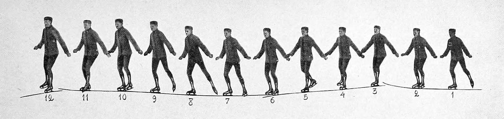

La Guerre des centimes

Deviens coursier et travaille en toute liberté. Profite d’une rémunération attractive et de plein de réductions entre autres avantages.
– Site Deliveroo
C’est une image tremblante, fragile, qui nous fait entrer dans cette histoire de débrouille et de précarité. À leur arrivée à Paris, Omar et Marwen deviennent livreurs à vélo pour gagner de quoi vivre et pouvoir, un jour, réaliser leurs rêves : devenir journaliste pour l’un, rappeur pour l’autre. Le film nous embarque dans l’urgence au milieu de la circulation d’un Paris labyrinthique. Concurrence, vulnérabilité, danger, lutte sociale, survie, solitude. Le nouveau monde du travail est un monde en guerre.
Le film brosse le quotidien des deux jeunes hommes rythmé par les allersretours à vélo, jusqu’à l’épuisement. Nader S. Ayach fait le choix d’une caméra vidéo 8mm qui donne une texture inattendue à cette aventure des temps modernes. Face à l’image dynamique et contemporaine que cherchent à incarner les start-up multinationales, celle du film est instable, les couleurs sont ternes, abîmées.
Coup d’oeil à droite, à gauche, vivacité du regard. Place de la République, nous rejoignons un groupe de jeunes livreurs rassemblés pour revendiquer des conditions de travail et un salaire digne face aux plateformes qui les embauchent. Derrière la caméra, la main qui les salue est habillée d’un gant de cycliste. Le réalisateur, arrivé récemment en France est lui-même livreur à vélo. Il conduit son deux roues d’une main et tient la caméra de l’autre, luttant aux côtés des personnages qu’il filme, prenant le son comme il le peut. La Guerre des centimes est un film précaire, animé par la nécessité personnelle et politique de dire « nous existons ». Aujourd’hui, un an après le tournage, le mot d’ordre reste le même, les livreur* sont toujours mobilisés.
Retour au travail. Face à leurs écrans de téléphone, attendant les propositions de livraison, Omar et Marwen semblent spectateurs de la ville, suspendus au signal qui déclenchera leur prochaine course pour quelques euros. La sonnerie retentit, Omar se lève, l’écran se scinde, leurs routes se séparent. L’un enfourche son vélo pour partir à la conquête de la ville, l’autre patiente en espérant que son tour vienne. Portée par une bande-son bruitiste (sonnerie de téléphone, pédalier, klaxon, son des moteurs, vacarme de la ville), cette séquence nous projette dans la circulation parisienne, pris en étau entre les voitures et le stress des livraisons chronométrées. Ce split-screen, intervenu dans un second temps du montage, produit un souffle, un élan. Bien qu’un peu isolée, cette mise en danger, ce déséquilibre dans la forme, tire soudain partie des fragilités du film en renvoyant directement aux risques pris par les livreurs tout au long de la journée.
La Guerre des centimes est une histoire contemporaine de sacrifice et d’amitié. Le sacrifice d’une jeunesse en exil, engagée dans l’aventure de la réussite sociale à l’étranger. Entre deux courses, Omar et Marwen prennent le temps de se raconter, de dire la pression sociale et les responsabilités vis-à-vis de leurs familles. Une fois l’équipement de coursier ôté, ils questionnent la valeur de la liberté qu’ils rencontrent dans leurs nouvelles vies. Lorsqu’un pneu du vélo d’Omar crève, Marwen lui amène le matériel nécessaire pour le réparer et l’on saisit toute l’importance de l’entraide entre livreur*. Bien qu’ils soient éparpillés aux quatre coins de la capitale, atomisés, la solidarité qu’ils parviennent à préserver entre eux rend possible la constitution d’un nous. Dans cette même scène, toute la sincérité du geste documentaire se déploie, lorsqu’en hors champ quelqu’un les interpelle : «Hey les acteurs !». Le regard du réalisateur se retourne et l’homme au ton moqueur entre dans le cadre, il semble gêné de sa propre remarque face à la sincérité d’un regard qui ne joue pas. Ce monde est bien réel.
| Salle | Heure | Programmation |
|---|---|---|
| Salle Moulinage | 21h15 | Expérience du regard |